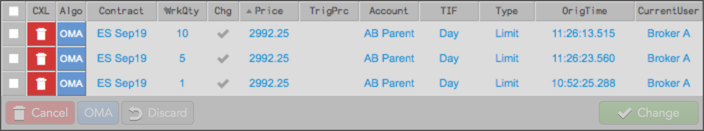
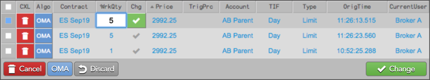
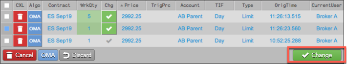
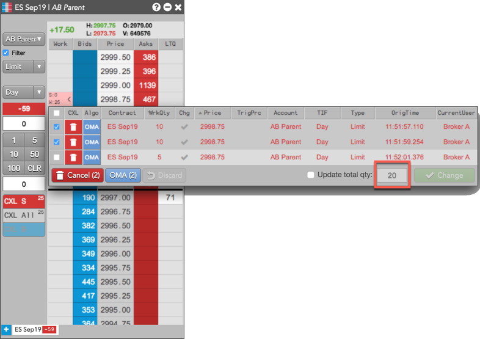
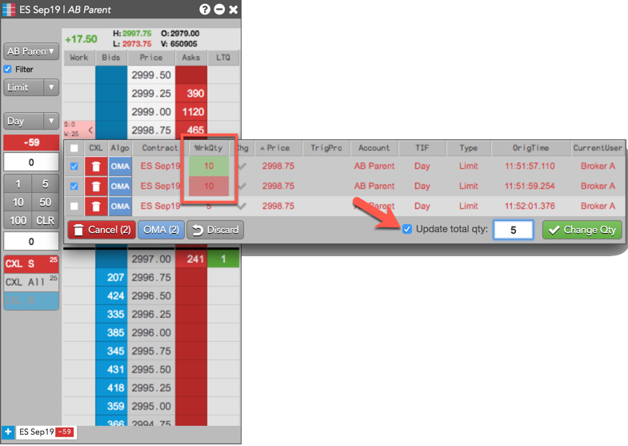
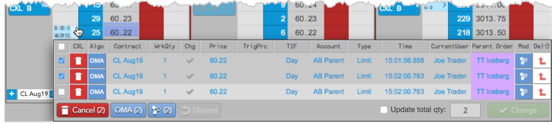
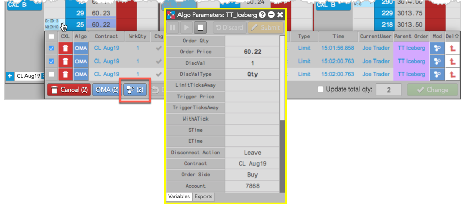
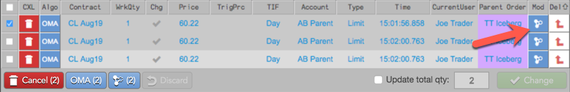
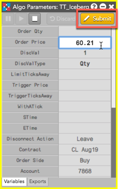

To make a change to an order using the Floating Order Book:



If you have multiple orders working at the same price level, you can reduce the total quantity of two or more of the orders.
For example, you submit three working orders of 10, 20, and 30 contracts respectively for a total order quantity of 60 at a price level, then decide to reduce the total quantity to 30 using the Floating Order Book.
TT would delete the 30-lot order (the most recent) to bring the total quantity to 30. Conversely, if you placed the same orders in reverse (30, 20, 10), TT would delete the 10- and 20-lot orders, leaving the single 30-lot order. If necessary, TT will change the quantity of the newest remaining order to achieve the desired total quantity.
To reduce the total quantity of multiple orders at a price level:
The total quantity of the selected orders is displayed in the Update order qty: field (e.g., 20).


The WrkQty column shows which selected orders will be canceled (red) or modified (green) to reflect the updated total quantity of the orders.

The number of orders selected is displayed in the button (e.g., 2).

Tip: If only one order is selected, click in the Mod column for the selected order.

Double-click each parameter to modify its value (e.g., Order Price).
